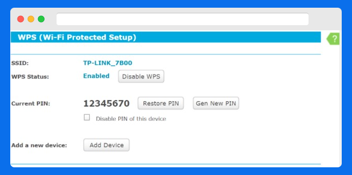

Esta es una guía que servirá para reforzar aspectos de seguridad "hardening" para este Router Inalámbrico Gigabit N 450Mbps.Por lo tanto espero que sirva para dicho propósito.
OPCIONES WIRELESS
- Wireless Network Name: Es recomendable cambiar el nombre de nuestra Wi-Fi:
Mode: Para elegir qué protocolos Wi-Fi se van a usar. En este caso, mixto entre los estándar b/g/n. Si supiéramos que todos nuestros dispositivos son compatibles bajo un mismo estándar y hubiera posibilidad de dicha configuración. Se pondría la opción de 1 o 2 estándares solo.
Channel Width y Channel: Con un ancho de 20MHz sería suficiente, si es cierto que el ancho de 40Mhz conseguimos mayor velocidad, pero un menor alcance. Pero dependiendo de las interferencias que tuviéramos. Sería recomendable dejarlo en Auto. Así, el mismo Router decidirá qué ancho de banda utilizar. Lo mismo, con el canal por donde emitir nuestra red Wi-Fi.
Enable Wireless Router Radio: Sino es totalmente necesario el uso del Wi-Fi. Entonces desactivaremos esta opción, para no emitir una señal Wi-Fi. Porque se decida, que los dispositivos se van a conectar por cable.
Enable SSID Broadcast: Desactivamos está opción, así evitaremos a priori emitir el nombre de nuestra red Wi-Fi para todo el mundo.
OPCIÓN WPS

- WPS: Es muy recomendable dejarlo desactivado siempre. O, como mucho usarlo el tiempo imprescindible para conectar rápidamente una serie de dispositivos que queramos tener.
OPCIONES SEGURIDAD WIRELESS
- Encriptación Wi-Fi: Dependiendo del entorno en el que vayamos a tener nuestra red Wi-Fi, usaremos tipo Personal o Empresa. A día de hoy, ya hay una alta compatibilidad de dispositivos con WPA2. Descartamos WEP.
- Versión: WPA2-PSK
- Encryption: AES
- Wireless Password: Elegiremos una clave, que no sea la que viene por defecto. Al menos de unos 14 carácteresmayúsculas/minúsculas, números y caracteres especiales. Otra forma podría ser usar partes de una frase de un libro que te guste y generar una clave.
- Group Key Update Period: Si lo dejamos a 0, no estará activado. Si ponemos 30 (segundos) o más. Este es el tiempo que queremos que pase para actualizar el grupo de claves; que de manera interna realiza WPA2, cuando estamos conectados a nuestra Wi-Fi. Son claves generadas aleatoriamente cada cierto tiempo, diferente a la clave que ponemos la primera vez que nos conectamos a nuestra Wi-Fi.
- WPA/WPA2 Enterprise: Diferencia, se hace uso de un servidor RADIUS de autenticación, cuando se quiere conectar un usuario. Dando un añadido de seguridad, puesto que el servidor se encargará de evaluar si dicho usuario tiene permitido el conectarse a la red Wi-Fi pidiendo un usuario y clave, no que conozcas la clave Wi-Fi solo.
- Radius Server IP: Dirección IP del servidor RADIUS.
- Radius Port: Puerto del servidor 1812.
- Radius Password: Clave para el servidor RADIUS.
- Group Key Update Period: Clave para el servidor RADIUS.
OPCIONES FILTRADO DE M.A.C
- Wireless MAC Filtering: Como medida de seguridad, es bueno habilitarlo. Aunque existen técnicas que luego como atacante permiten clonar o suplantar las MAC 's. Es una capa más de seguridad.
Filtering Rules:
- Deny the stations specified by any entries in the list to access: Denegamos las MAC's que registramos abajo.
- Allow the stations specified by any entries in the list to access: Permitimos las MAC's que registramos abajo.
OPCIONES GUEST NETWORK WIRELESS
- Guest Network Wireless Settings: Este es otro apartado, que si no es totalmente necesario, sería recomendable evitar el habilitarlo. Una red Wi-Fi para invitados. Que permite también que estos puedan acceder a tu red local y habilitar un control del ancho de banda. Según como se configure.
- Un primer apartado similar a la configuración que podemos hacer de nuestra Wi-Fi Principal.
- Access Time: Podemos elegir entre 2 maneras:
- Schedule: Decidimos si todos los días las 24h o en un rango de horas concretas. O días concretos las 24h o horas en concreto. No queremos que se puedan conectar los invitados.
- Timeout: Indicamos las horas y minutos que tendrán los invitados para hacer uso del Wi-Fi, antes de que se les desconecte.
OPCIONES DHCP (RESERVA DE DIRECCIONES IP)
- DHCP Server: Para habilitar un servidor DHCP en nuestro Router Wi-Fi. Servirá IP's a los dispositivos.
Start IP Address y End IP address: Comienzo y fin del rango de IP's.
- Address Lease Time: Tiempo en minutos que mantenemos una IP.
- Default Gateway, Default Domain, Primary DNS, Secondary DNS: Otros datos que queramos configurar cuando un dispositivo reciba una IP del DHCP.

- Address Reservation: Otra medida de seguridad y recomendable. Sería el reservar y fuera del rango que de el DHCP, una serie de direcciones IP's que queramos tener configurada en los dispositivos de manera estática. Junto a su MAC. Será una capa más, a la hora de posibles ataques maliciosos. Intentando suplantar algún dispositivo importante vía el DHCP.
OPCIONES ALMACENAMIENTO COMPARTIDO; FTP, MEDIA Y PRINT SERVER. Y CUENTAS DE USUARIO
- User Account Management: En este apartado podemos habilitar tanto la compartición de almacenamiento, un servidor FTP, de Media y de Impresión.
PORT TRIGGERING
- Port Triggering: Podemos habilitar puertos, para que ciertos servicios públicos que tengamos activos; como un servidor FTP. Equipos fuera de la Red o directamente desde Internet. Que puedan acceder desde otros equipos.
CONFIGURACIONES UPnP
- UPnP: Aquí, podremos activar/desactivar el redireccionamiento de puertos de manera automática, si un dispositivo lo requieren para la comunicación. Para un mejor control, es recomendable realizar apertura de puertos de manera manual.
Pero en algunos casos puede ser laborioso. Y usando este protocolo se abren y cierran los puertos según se requieran. Por lo que si usamos bastantes puertos. Podría ser buena medida activar UPnP, al menos para aquellos dispositivos o aplicaciones que no tengamos configurado de manera manual.
OPCIONES DE SEGURIDAD (Opciones Básicas de Seguridad)
- SPI Firewall: Lo dejamos habilitado, realizará un seguimiento de las conexiones de redes que pasan a través del mismo.
- VPN: Si queremos habilitar una VPN en nuestro Router Wi-Fi. Aunque según las compatibilidades que tengan nuestros dispositivos según los distintos protocolos de VPN.
ALG: Aquí podremos habilitar/deshabilitar la capa de aplicación de la puerta de enlace. Actuará como un servidor de aplicaciones controlando si permite/deniega cierto tráfico hacia un servidor de aplicaciones. FTP, TFTP, RTSP(Transmisión en tiempo real) etc..
OPCIONES DE SEGURIDAD (Opciones Avanzadas de Seguridad)
- Packet Statistics Interval: Podemos asignar un intervalo en segundos. Para luego obtenerlas en una estadística.
- DoS Protection: Si queremos una protección contra DoS. La dejamos habilitada.
- Filtros: Tenemos varias opciones de filtros para evitar posibles ataques de "inundación".
Filtro de "inundación ICMP", elegimos Packets/Secs
Filtro de "inundación UDP".
Filtros de "inundación TCP".
Ignore Ping Packet from WAN Port to Router: Sería recomendable habilitar está opción.
Forbid PIng Packet from LAN Port to Router: Si no queremos poder realizar "pings", dentro de nuestra LAN. Activaremos la opción.
ADMINISTRACIÓN LOCAL
- Management Rules: Tenemos 2 reglas que permiten que cualquier PC de la LAN, pueda acceder a la administración vía-web del Router. O solo las MAC's que estén listadas.
ADMINISTRACIÓN REMOTO
- Remote Management: Podremos configurar para que se pueda acceder de manera remota a administrar nuestro Router. En esta opción elegimos el puerto 443 en vez 80. Que no sea un puerto por defecto. Y en vez de permitir a cualquier IP, pondremos una IP que supiéramos que está autorizada a poder administrarlo de manera remota.
REGLAS ADMINISTRACIÓN ACL'S
- Internet Access Control: Habilitamos las listas de control de acceso, para dar una capa más de seguridad a nuestro Router Wi-Fi.
- Default Filter Policy: Podemos definir la política de filtro que por defecto se aplicará.
- Si permitir paquetes de un host específico que hemos declarado en las ACL's o denegar específicamente lo que hemos dictado en las ACL's.
- Podemos ir definiendo las distintas reglas:
- Indicando un nombre, host(IP o MAC), host objetivo y cuándo se realizará esa ACL.
- Status: Si la tenemos activa o no.
- Modify: Podemos editarla o eliminarla.
OPCIONES ENLACE ARP'S
- ARP Binding: Podemos habilitar/deshabilitar, la asignación por ARP. Sería una buena medida de seguridad, que nuestros dispositivos que están conectados a la Wi-Fi. Los tengamos identificados por pareja de MAC e IP, de está manera podemos evitar posibles suplantaciones. Y ponerlo algo más difícil, ya que el intento de clonación del conjunto, sería más complicado.
LISTADO ENLACES ARP
FIRMWARE UPGRADE
- Firmware Upgrade: Mantendremos siempre que se pueda actualizado el firmware de nuestro Router Wi-Fi.
OPCIONES RESTAURACIÓN DE BACKUPS
- Backup & Restore: Mantendremos una política de backups de la configuración de nuestro Router. Por si ocurriera algún percance con ella. Y se tuviera que respaldarla.
OPCIÓN CLAVE ADMINISTRACIÓN
- Clave de administración: Punto importante y muy recomendable. Cambiar tanto el usuario y clave por defecto del Router Wi-Fi, por otras distintas.
SYSTEM LOG
- System Log: Una buena medida de seguridad. Sería habilitar el Log del Router.
Log Type:DHCP, VPN, SECURITY, FILTER etc...
Log Level:ERROR, WARNING, NOTICE y ALL